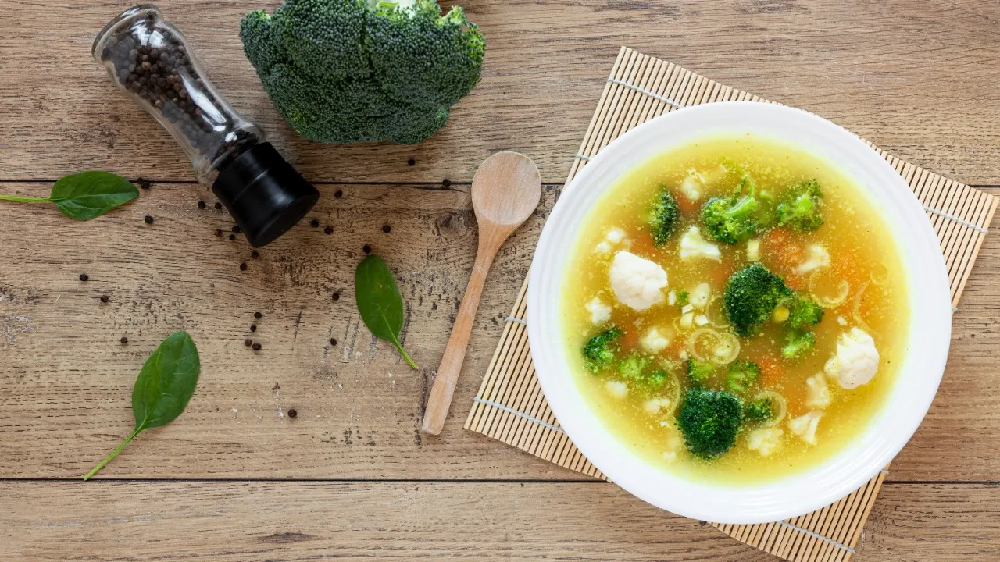

La soupe au choux du futur jardin de Florian

Ingrédients :
Choux verts
Pommes de terre charlotte
Lard fumé
Oignons
Bouillon de légumes
Sel fin
Poivre
Beurre
Étapes de la recette :
Eplucher les oignons et les ciseler
Eplucher les pommes de terre et les couper
Faire suer les oignons. Ajouter le chou et le laisser fondre
Mettre ensuite les pommes de terre et la moitié des lardons et cuire pendant 10 min.
Assaisonner le tout et ajouter le bouillon de légumes, puis poursuivre la cuisson durant 10 min.
Poêler les lardons restants dans une poêle chaude pour les dorer, puis les égoutter sur du papier absorbant.
Servir la soupe bien chaude en ajoutant les lardons.
Tips
Le secret du chef est le suivant : demandé à Olivia Gaya de faire le repas, simple et efficace !